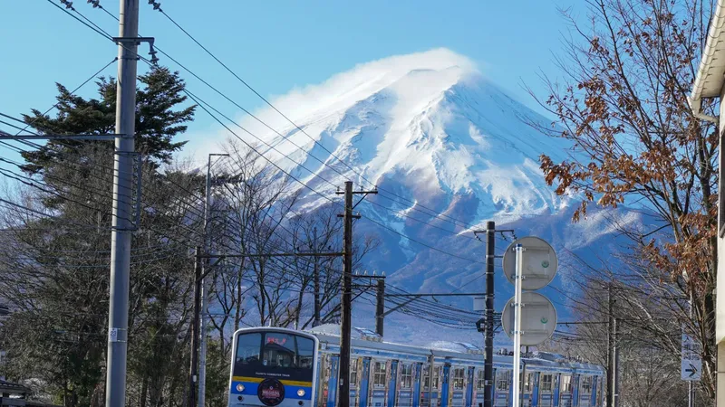
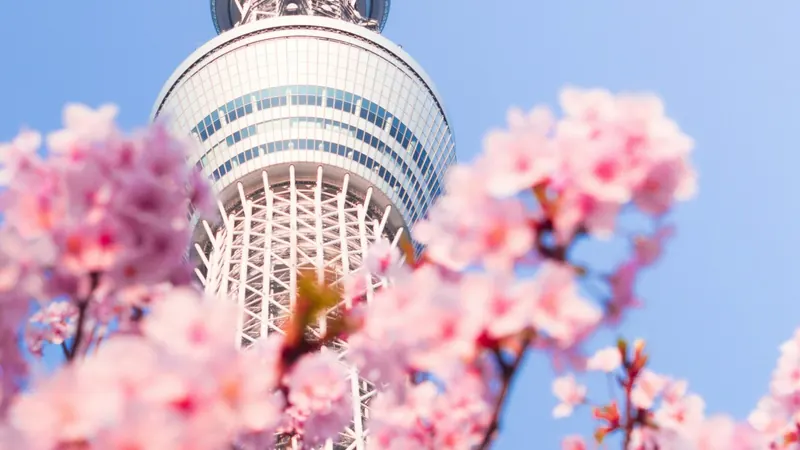
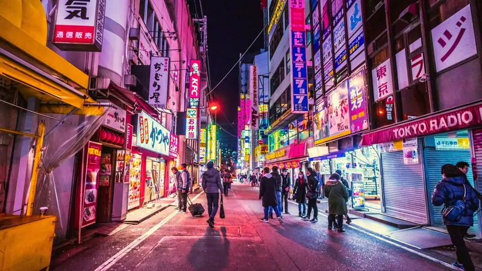
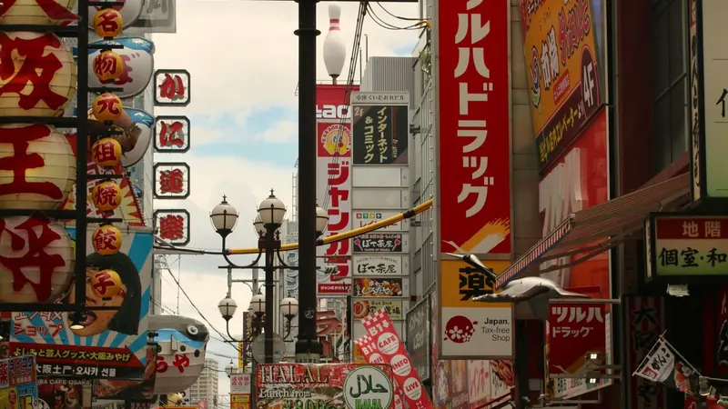
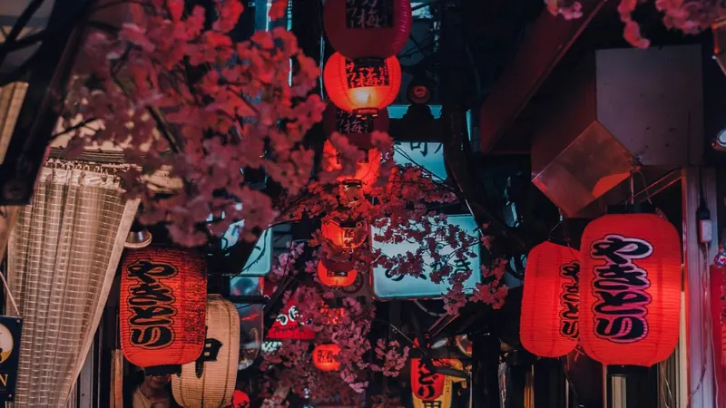

Il Giappone in breve
EMERGENZE110 polizia · 119 vigili del fuoco e ambulanza
VALUTAYen giapponese (¥). Carte diffuse, ma tieni un po' di contanti.
PRESETipo A e B, 100 V
TRASPORTILe carte IC (Suica, PASMO) valgono su quasi tutti treni e bus
TRENILo Shinkansen collega le città principali
MANCIAIn Giappone non si usa
🗺️ Itinerari
Kyoto in 2 giorni: l'itinerario perfettoFushimi Inari, Kiyomizu-dera, Gion, Arashiyama e Kinkaku-ji nell'ordine giusto.Leggi la guida →Tokyo, Kyoto e Osaka in 7 giorniLa Golden Route giorno per giorno, tempi dello Shinkansen e il conto del JR Pass.Leggi la guida →
🚄 Treni e trasporti

Da Tokyo a Kyoto: Shinkansen, bus o aereo?Tempi porta a porta, prezzi, il posto per il Fuji e i bagagli grandi.Leggi la guida →Guida allo Shinkansen per chi lo prende la prima voltaQuale stazione usare, tempi di viaggio, Nozomi o Hikari, regole del JR Pass, bagagli grandi e biglietti.Leggi la guida →Il JR Pass conviene nel 2026?Nuovi prezzi 2026, il conto rapido e le alternative più economiche.Leggi la guida →
Da Narita e Haneda a TokyoSkyliner, Narita Express, bus e treni da Haneda: prezzi e tempi.Leggi la guida →
Suica e PASMO: le carte IC per turistiWelcome Suica o carta normale, Suica su iPhone, dove funziona e come ricaricarla.Leggi la guida →🍜 Cibo e lingua

Come chiedere il menu in inglese in GiapponeLa frase giapponese esatta, come pronunciarla e cosa fare se il menu in inglese non c'è.Leggi la guida →
Frasi giapponesi per il ristorante che ogni turista deve sapereChiedere un tavolo, ordinare, allergie e pagare il conto, con romaji e pronuncia.Leggi la guida →⚠️ Sicurezza
PRENOTA
Pronto a prenotare?
🎫 JR Pass · Klook ↗🚄 Biglietti Shinkansen · Klook ↗🚆 Treni e bus · 12Go ↗🏨 Hotel a Tokyo · Agoda ↗🎟 Biglietti attrazioni · Tiqets ↗✈️ Voli · Aviasales ↗
Link affiliati: se prenoti, 687 può ricevere una commissione senza costi extra per te.
Pianifica tutto il viaggio in Giappone in un'app
687 Japan collega Shinkansen, voli, hotel e strumenti per ogni giorno come Nearby, aiuto per il menu in inglese, traduzione e allerte terremoto, prima e durante il viaggio.
Vai anche in Italia? Guida di viaggio Italia →